Как да премахнем паразитите при котката (обезпаразитяване)?
Защо обезпаразитявам?
Колкото и малък да изглежда света, покрай Вас и Вашия любимец има и други същества, някои - видими, а други – незабележими и чакащи да намерят някой домашен питомник, от който може да се хранят, а именно говорим за паразитите.
Противно на всеобщото мнение котките, макар и да не излизат извън пределите на нашия дом, могат да се заразят с паразити. Хорат се чудят как е възможно това, тъй като не отчитат факта как самите те излизат навън ту да пазаруват, ту да работят или просто да се разходят. И докато на пръв поглед са незабележими поради техните размери (могат да се видят само с микроскоп), в околната среда има яйца на паразити, които най-често биват изхвърлени чрез изпражненията на заразени животни. Освен чрез дрехите и обувките си стопаните може да пренесат яйца или ларви на паразити и чрез бълхи, както и ако котката им пие замърсена с паразити вода или се хранят от заразена храна. Макар и да има по-малък риск от заразяване, домашните котки не са недосегаеми за паразитите.
Какво означава паразит? За да разберете по най-опростения начин е нужно само да си представите човек, който не работи нищо, но се храни от трапезата на някой друг, който работи и за двамата.
Това са паразитите - организми (те биват не само животни, но и растения), които се хранят за сметка на друг организъм, като му вредят.
И докато стопаните не ги забелязват, те си остават в заобикалящата ги среда, чакат да намерят гостоприемник, от който да се хранят. И в някои случаи намират питомци, като нерядко паразитите нападат и стопаните, което означава, че ние чрез здравето на животните си се грижим и за здравето си.
Домашните ни любимци са като малките деца – разчитат на нас да се грижим за тях, което не означава само да ги галим и гушкаме (за съжаление!), но и да ги защитаваме от неща, които ще им навредят – от паразитите.
За да стане по-ясно какво представляват паразитите, Ви препоръчваме да прочетете по-надолу преди да преминете към самото обезпаразитяване:
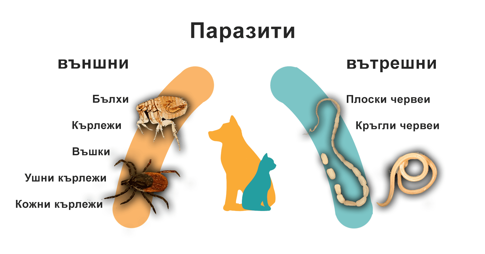- ВЪНШНИ ПАРАЗИТИ:
- Бълхи
- Кърлежи
- Въшки
- Ушни кърлежи
- Кожни кърлежи
Бълхите и кърлежите не само че влошават качеството на живот на Вашия любимец (и евентуално на Вас), но кърлежите пренасят и опасни инфекциозни заболявания (Виж: Бабезиоза, Анаплазмоза, Ерлихиоза, Лаймска болест, Хепатозооноза, Туларемия), а бълхите пренасят тении (Виж: Дипилидоза).
Други вектори (т. е. преносители на заболявания) са комарите и някои видове мухи, макар че те не се причисляват към външните паразити. (Виж: Лайшманиоза. Телазиоза).
Въшките, за разлика от бълхите и кърлежите, не пренасят инфекциозни заболявания и не са много опасни за здравето на животното, но също може да доведат до непрекъснато чесане и възпаление на кожата, което влошава качеството на живот.
Ушните и кожните кърлежи не са точно както обикновените кърлежи, а са много по-дребни (те се виждат само под микроскоп). Ушните кърлежи причиняват ушна краста (отодектоза), а кожните кърлежи (саркопти, нотоедри и демодекс) – саркоптоза, нотоедроза и демодекоза – заболявания, които са известни под името „кожна краста“. (Виж: Отодектоза, Саркоптоза, Нотоедроза, Демодекоза)
- ВЪТРЕШНИ ПАРАЗИТИ:
- Плоски червеи
- Кръгли червеи
- Плоските червеи са също приличащи на спагети червеи. Такива са:
- Аларии
- Тении
Алариите са плоски червеи, които може да засегнат дихателната или храносмилателната система на любимците, но те се срещат рядко. (Виж: Алариоза)
Тениите са плоски червеи, чието тяло е начленено. Най-често паразитират в червата на кучетата и котките и може да причиняват храносмилателни проблеми като диария и загуба на тегло, а в други случаи заразените животни нямат симптоми и заразяват хората. Заболявания, които причиняват, са:- Дипилидоза и Мезоцестоидоза (Виж: Дипилидоза, Мезоцестоидоза)
- Мултицепидоза (Виж: Мултицепидоза)
- Ехинококоза (Виж: Ехинококоза)
- Хидатигенна тениоза (Виж: Хидатигенна тениоза)
- Пизиформна тениоза (Виж: Пизиформна тениоза)
- Овисна тениоза (Виж: Овисна тениоза)
Кръглите червеи са дълги, тънки и кръгли червеи, приличащи на спагети. Такива са:
- Токсокари и токсаскариди (Виж: Токсокароза, Токсаскаридоза)
- Дирофилария (Виж: Дирофилариоза)
- Анкилостоми и унцинарии (Виж: Анкилостомоза и Унционариоза)
- Трихури (Виж: Трихуроза)
- Телазии (Виж: Телазиоза)
- Трихинели (Виж: Трихинела)
| Токсокари и токсаскариди (Виж: Токсокароза, Токсаскаридоза) | засягат различни органи, включително и червата и може да причинят диария, повръщане, кахексия. Човек също може да се зарази. |
| Дирофилария (Виж: Дирофилариоза) | засягат белодробните артерии и сърцето при кучетата и може да доведат до смърт |
| Анкилостоми и унцинарии (Виж: Анкилостомоза и Унционариоза) | Също засягат червата, като образуват язви. Паразитите може да проникнат и през кожата и да доведат до нейното възпаление. |
| Трихури (Виж: Трихуроза) | Засягат също червата на кучетата и може да доведат до диария, загуба на тегло, дехидратация. |
| Телазии (Виж: Телазиоза) | Те може да засегнат не само червата, но и много други органи като очите. Човек също може да се зарази. |
| Трихинели (Виж: Трихинела) | Не засягат често кучетата и котките. При заразяване те се настаняват в червата и може да причинят диария и повръщане. |
Галерия:
{kind=link}
{kind=link}
Биологичен цикъл: И външните, и вътрешните паразити имат биологичен цикъл, който започва от яйце, от което се излюпва ларва, която става възрастен паразит. Различните паразити имат различни биологични цикли и в повечето случаи не са така прости, както предходния пример.
Заразяване: Когато кучето влезе в контакт с тези паразити (или с техните яйца или ларви), то може да се зарази. Паразити може да бъдат открити в тревисти местности или във фекалиите на вече заразени животни, както и във заразени води, храни, дори по обувките и по дрехите на собствениците на животни. Яйцата на паразитите са незабележими, което допринася за тяхното разпространение.
Размножаване: След като кучето се зарази с паразити, последните започват да се намножават и започват да причиняват здравословни проблеми на домашния любимец. Напр. при заразяване с бълхи кучетата започват да се чешат непрестанно, което може да доведе до възпаление на кожата, или до по-сериозни проблеми като FAD (Алергичен дерматит, причинен от бълхи). При заразяване с някои вътрешни паразити, като тениите, може да се появят здравословни проблеми с храносмилателната система като диария, а паразитът дирофилария навлиза в сърцето и може да доведе до смърт.
За да не се стигат до сериозни здравословни проблеми, е важно да се извършват редовни прегледи при ветеринарния лекар, който според индивидуалните характеристики на животното да предприеме специфична профилактика спрямо паразитите.
Обезпаразитяването на котенцата трябва да започне още през третата седмица след раждането (те не се заразяват още докато са в утробата за разлика от кученцата). След това се третират срещу паразити през петата, седмата и единадесетата седмици с подходящите противопаразитни продукти.
След този период котките, които са в риск от инвазиране (тези, които имат досег с междублокови пространства, дворове, ловуват гризачи и т. н.) се обезпаразитяват ежемесечно.
Но защо трябва да обезпаразитявам любимеца си ежемесечно? Защото някои паразити имат т. нар. биологичен цикъл – т. е. на по-разбираем език, както едно бебе става дете, тийнейджър и възрастен, то така и от едно яйце на паразит се излюпва ларва, която става възрастен паразит. За този биологичен цикъл трябва време и затова оптималното време, през което може този цикъл да бъде прекъснат, е през 30 дни. Разбира се, от любимец до любимец има разлика и затова при някои (както са при котките, които се гледат само в затворени пространства) интервалът, през който се дава обезпаразитяващо средство, е по-голям заради по-малката вероятност от опаразитяване на животното. Точно поради тази причина схемите за обезпаразитяване и ваксинация се правят от ветеринарни лекари.
И след като въпросите „Защо?“ и „Кога?“, свързани с обезпаразитяването се изясниха, следва да се отговори на въпросът „С какво?“.
Продукти за обезпаразитяване:
Продуктите, които можете да изберете, се продават в търговската мрежа в различни форми, размери и разфасовки, но те най-общо се класифицират спрямо начина им на приложение. В таблицата са описани техните характеристики:
| Тип препарат | Какво представлява? | Тип паразити |
| Дъвчащи таблетки | Малки капсулки, които се дават през устата | Вътрешни и външни |
| Спот-он форми | Малки пипетки, които се изливат върху козината на кучето | Външни |
| Инжективни продукти | Инжекции, които се поставят подкожно | Вътрешни и външни |
| Пасти и пудри | Прахоподобни препарати, които се изливат или размазват върху кожата | Външни |
| Каишки | Напоени с препарат каишки, които се поставят върху врата на животното | Външни |
Като се има предвид агресивната природа на паразитите, често комбинацията от няколко продукта води до най-добри резултати. Не бива да забравяте, че обезпаразитяването е непрекъснат процес, който трябва да се следи по календарни дни и схема, която е съставена от ветеринарен лекар.
По-надолу са дадени някои противопаразитни продукти:
Срещу външни паразити:
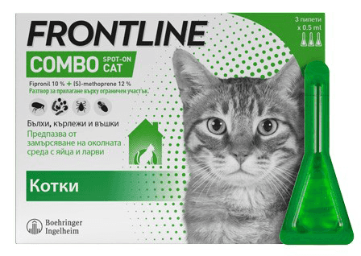
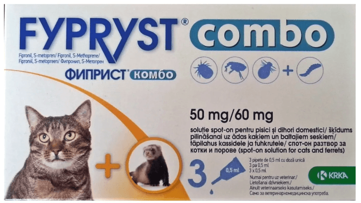
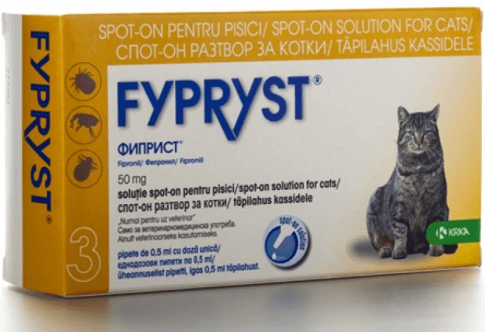
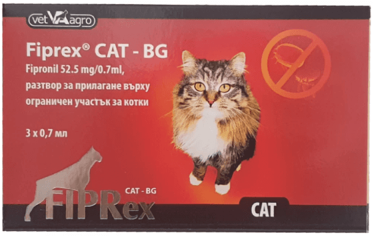
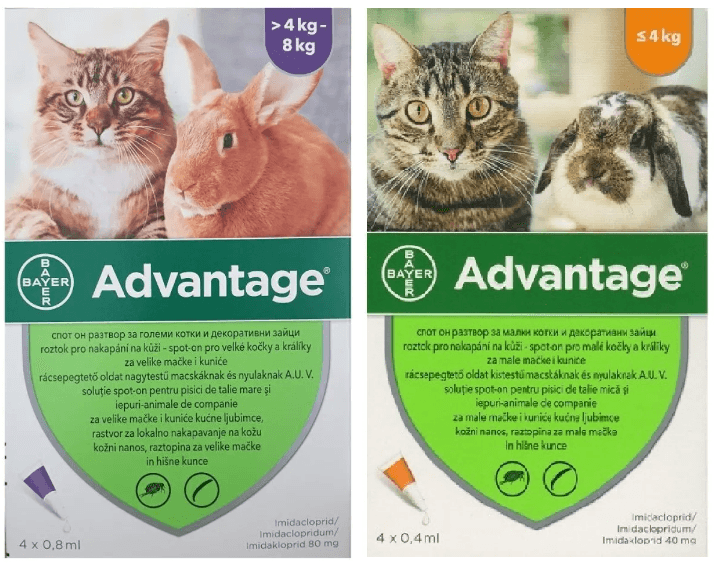
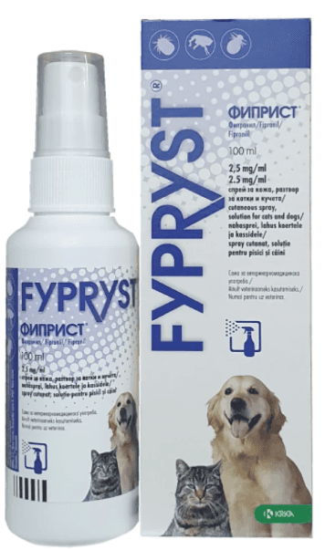
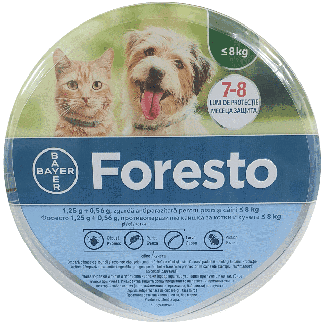
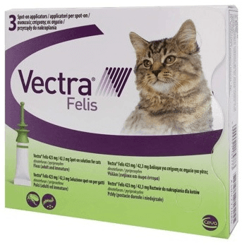
Срещу външни и вътрешни паразити:
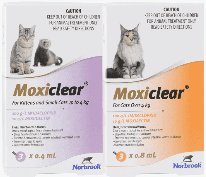
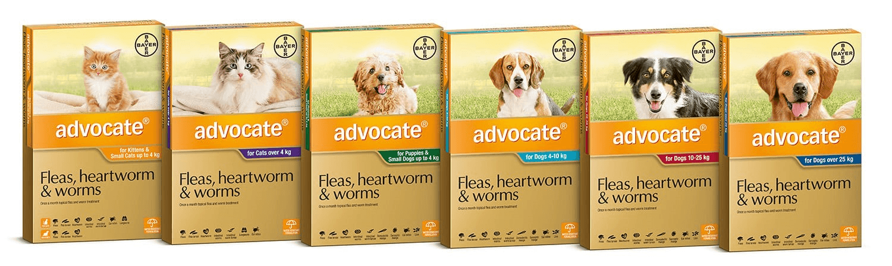
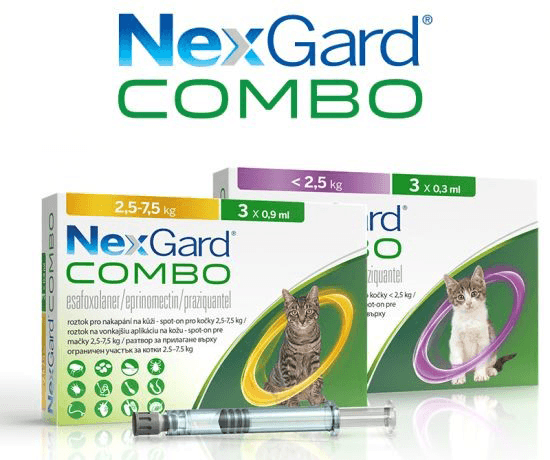
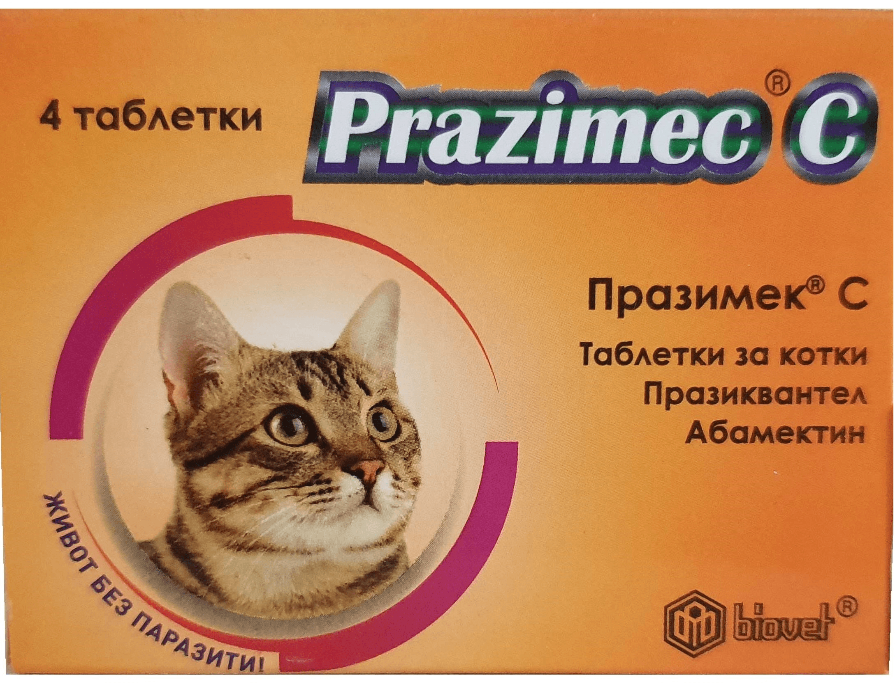
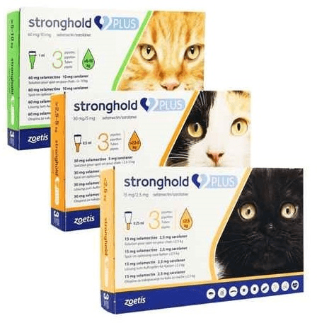
Срещу вътрешни паразити:
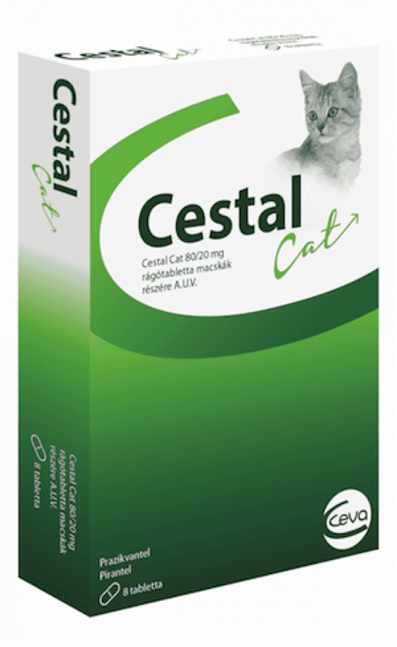
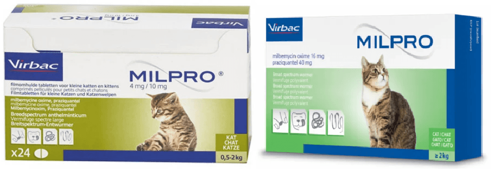
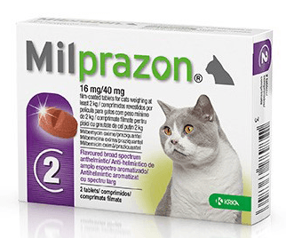
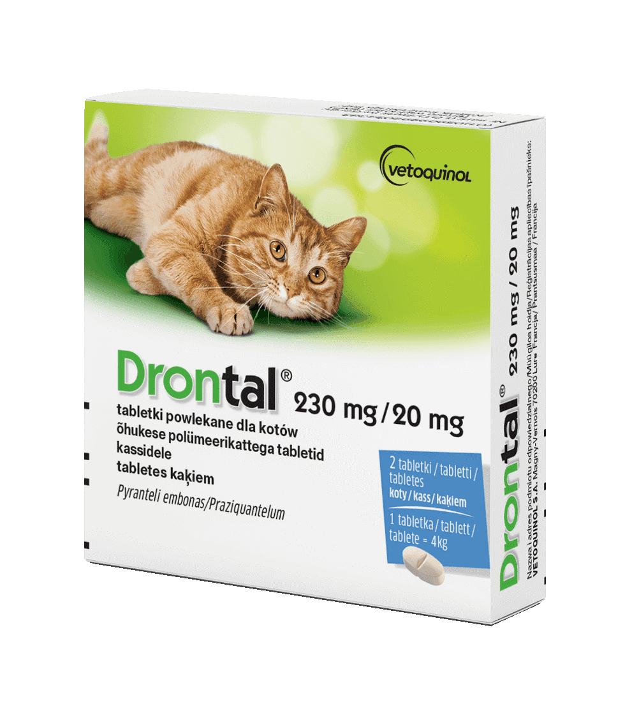

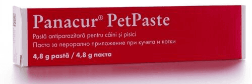